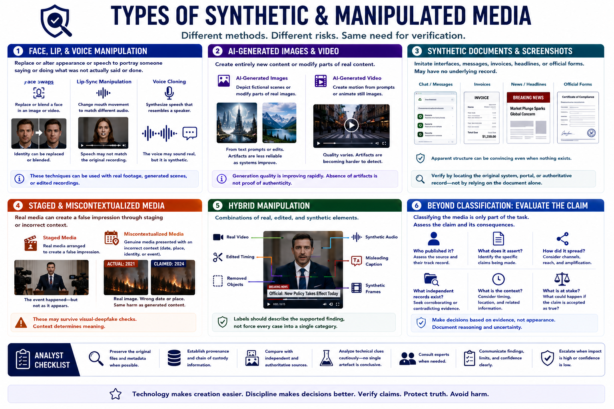

Types of Synthetic Media
Connecting to LMS... Progress: in progress

Narration
Face swaps replace or blend a face in an image or video. Lip-sync manipulation changes mouth movement to match different audio. Voice cloning synthesizes speech that resembles a speaker. Each can be used with real footage, generated scenes, or edited recordings.
AI-generated images can depict entirely fictional scenes or modify parts of real images. AI-generated video can create motion from prompts or animate still images. Quality varies, and visible artifacts are becoming less dependable as generation systems improve.
Synthetic documents and screenshots can imitate interfaces, messages, invoices, headlines, or official forms. Their apparent structure may persuade viewers even when no underlying transaction, page, or record exists. Verification should seek the original system or authoritative record.
Staged media is real media arranged to create a false impression. Miscontextualized media is genuine but presented with an incorrect date, place, identity, or event description. These cases can be as harmful as generated content and may survive visual-deepfake checks.
Hybrid manipulation combines methods. Real video may contain generated audio, edited timing, removed objects, misleading captions, and synthetic frames. Labels should describe the supported finding rather than force every case into a single category.
Classifying the media is only part of the task. Analysts must evaluate the associated claim: who published it, what it asserts, how it spread, what independent records exist, and what consequence follows if the claim is accepted.